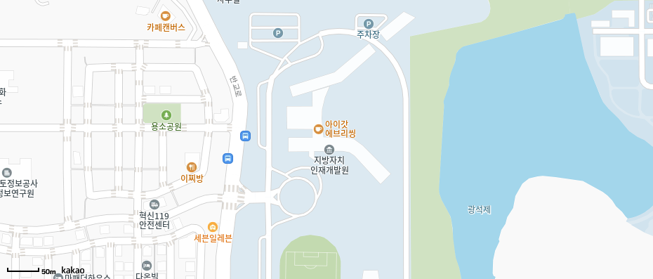

기관소개
오시는길

승용차로 오실 경우
경부고속도로 이동 → 천안JC에서 세종(광주) 방향(천안논산고속도로) → 논산JC에서 익산(광주) 방향(호남고속도로) → 서전주IC에서 동김제, 이서(서전주) 방향 → 서전주TG → 이서(동김제) 방향 우측도로(콩쥐팥쥐로) 이동 → 반교로 우측도로(삼우중학교 가는 길) 이동 → 도착
호남고속도로 이동 → 서전주IC에서 동김제, 이서(서전주) 방향 → 서전주TG → 이서(동김제) 방향 우측도로(콩쥐팥쥐로) 이동 → 반교로 우측도로(삼우중학교 가는 길) 이동 → 도착
전주시자전거경륜장 이동 → 콩쥐팥쥐로 서전주IC 방향으로 이동 → 반교로 우측도로(삼우중학교 가는 길) 이동 → 도착
광주대구고속도로 이동 → 함양JC에서 지곡(대전) 방향(대전통영간고속도로) → 장수JC에서 장수(익산) 방향(익산장수고속도로) → 익산JC에서 삼례(광주) 방향(호남고속도로) → 서전주IC에서 동김제, 이서(서전주) 방향 → 서전주TG → 이서(동김제) 방향 우측도로(콩쥐팥쥐로) 이동 → 반교로 우측도로(삼우중학교 가는 길) 이동 → 도착
남해고속도로 이동 → 진주JC에서 서진주(대전) 방향(대전통영간고속도로) → 장수JC에서 장수(익산) 방향(익산장수고속도로) → 익산JC에서 삼례(광주) 방향(호남고속도로) → 서전주IC에서 동김제, 이서(서전주) 방향 → 서전주TG → 이서(동김제) 방향 우측도로(콩쥐팥쥐로) 이동 → 반교로 우측도로(삼우중학교 가는 길) 이동 → 도착
※ 내비게이션 이용시 "지방자치인재개발원(구 지방행정연수원)"으로 검색하시거나, 주소검색을 통해 “전북특별자치도 완주군 이서면 반교로 150”으로 검색하시기 바랍니다.
시외·고속버스로 오실 경우
| 노선 | 운행정보 | 노선 | 운행정보 | ||||
|---|---|---|---|---|---|---|---|
| 출발 | 도착 | 첫차 | 막차 | 출발 | 도착 | 첫차 | 막차 |
| 자치인재원 | 익산역 | 13:35 | 17:05 | 익산역 | 자치인재원 | 18:30 | 20:10 |
| 서울(센트럴시티) | 06:55 | 18:25(월~목) 19:25(금~일) |
서울(센트럴시티) | 06:40 | 19:30 | ||
| 혁신도시 | 익산역 | 07:50 | 21:00 | 익산역 | 혁신도시 | 08:10 | 21:45 |
| 서울(센트럴시티) | 07:00 | 19:30 | 서울(센트럴시티) | 06:40 | 19:30 | ||
| 서울(남부터미널) | 08:10 | 18:30 | 서울(남부터미널) | 07:35 | 19:40 | ||
| 수원 | 08:20 | 17:50 | 수원 | 09:00 | 17:40 | ||
자치인재원‧혁신도시 ↔ 서울(센트럴시티)(김제행/도착지 자치인재원 선택) : KOBUS(www.kobus.co.kr) / 고속버스 모바일 앱(모바일 티켓 가능)
※ 자치인재원에서 탑승시 현장 결제 불가 ⇨ 사전 발권 또는 홈티켓 출력
혁신도시 ↔ 서울(남부 터미널), 혁신도시 ↔ KTX 익산역 : 버스타고 웹(www.bustago.or.kr) / 버스타고 모바일
혁신도시 ↔ 수원 : 시외버스 통합예매(txbus.t-money.co.kr)/시외버스 모바일앱
- 서울 강남↔자치인재원 노선 안내 : 센트럴시티(02-6282-0114) / 금호고속 김제영업소(063-544-0075)
- 서울 남부↔혁신도시 노선 안내 : 남부터미널(02-521-8550) / 전북고속(063-272-0109)
- 익산역↔자치인재원‧혁신도시 노선 안내 : 전주고속(063-254-1131)
시내버스로 오실 경우
| 27번 버스 (115~160분 간격) |
주요 경유지 : 이서면 ↔ 자치인재원 ↔ 혁신도시 ↔ 삼례역 승강장 위치 : 자치인재원 앞(자치인재원→삼례역), 자치인재원 정문 건너편(삼례역→이서종점) |
|---|---|
| 165번 버스 (10~35분 간격) |
주요 경유지 : 이서면 ↔ 자치인재원 ↔ 혁신도시 ↔ 전주대학교 ↔ 전북특별자치도청 ↔ 한옥마을 ↔ 전주동물원 승강장 위치 : 자치인재원 앞(자치인재원→전주동물원) |
| 김제 시내버스 26번 | 주요 경유지 : 김제 ↔ 이서면 ↔ 자치인재원 ↔ 혁신도시 ↔ 전주대학교 ↔ 전북특별자치도청 승강장 위치 : 자치인재원 앞(자치인재원→전북특별자치도청), 자치인재원 정문 건너편(자치인재원→김제) |
※ 스마트폰 전주버스(JJBUS) 앱, 전주시 교통정보센터 홈페이지를 통해 배차시간표 및 실시간 버스위치를 확인하실 수 있습니다.
※ 지방자치인재개발원까지 오는데 시내버스 요금은 현금 1,500원, 교통카드 이용시 1,450원입니다.(김제 시내버스 요금은 현금 2,500원, 교통카드 2,450원)
통근버스 운행 (운행기간 2025. 1. 20.~ 12. 12.) ※ 교육사정에 따라 날짜·시간 변동 가능
| 구분 | 노선 | 운행시간 | 탑승장소 |
|---|---|---|---|
| 출근 (매주 월요일) |
전주고속터미널 → 자치인재원 (약 40분 소요) |
09:10 | 불교대학 앞 한국노총 (시외버스터미널-고속버스터미널 사이에 위치) |
| 익산역 → 호남제일문 → 자치인재원 (인재원까지 약 40분 소요) |
09:15 | -(익산역) 익산역에서 나와 큰길가에 시내버스 승강장 -(호남제일문) 호남제일문 시외버스 버스하차장 (매표소X) |
|
| 퇴근 (매주 금요일) |
자치인재원 → 전주고속터미널 (약 40분 소요) |
12:30 | 정문경비실 옆 좌측 |
| 자치인재원 → 호남제일문 → 익산역 (익산역까지 약 40분 소요) |
12:30 | 정문경비실 옆 좌측 |
※ 월, 금요일이 공휴일인 경우 다른 요일에 운행할 수 있음
페이지 만족도 및 담당부서 안내
페이지 내용과 사용 편의성에 대한 의견을 들려주세요.